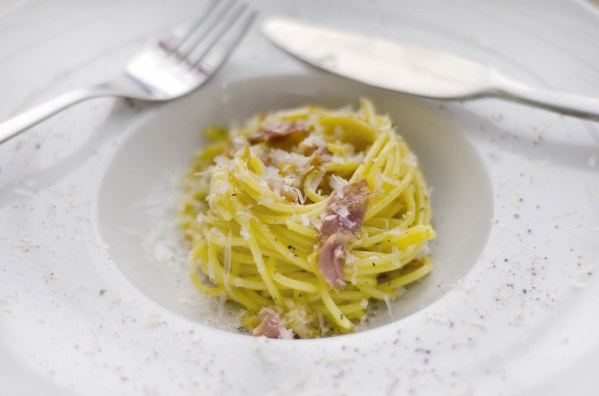

Recette de Pate Carbonara Traditionnelle

Description
Les pâtes à la carbonara (en italien : pasta alla carbonara) sont une spécialité culinaire à base de pâtes, très souvent des spaghetti, imbibés d'une émulsion d'un peu d'eau de cuisson des pâtes avec du pecorino râpé et des jaunes d'œufs, servis ensuite avec du poivre noir et du guanciale, taillé en petits morceaux.
Ingredients
- 1 cuillere a soupe d'huile d'olive
- 6 pincees de poivre
- 3 pincees de sel
- 6 jaunes d'oeuf
- 500g de pancetta
- 50g de Parmesan Reggiano
- 300g de pates
Etapes
- Battre les jaunes d'œufs en y ajoutant 1 pincée de sel, 2 pincées de poivre et 40 g de parmigiano reggiano râpé.
- Remplir une grande casserole d'eau et la faire chauffer avec deux pincées de gros sel.
- Pendant ce temps, couper la pancetta en lamelles grossières et les faire dorer dans une poêle avec 1 cuillère à
soupe d'huile d'olive.
- Quand l’eau dans la casserole commence à bouillir mettez vos pâtes.
- Prendre deux cuillères à soupe d'eau de cuisson des pâtes, les verser dans le jaunes d'œufs puis remuer.
- Réservez la pancetta et laissez la poêle au chaud.
- Une fois la cuisson des pâtes al dente, les égoutter sommairement et les mettre dans la poêle et remuer.
- Verser le mélange dans un saladier et incorporez la préparation des jaunes d'œufs.
- Ajouter la pancetta et deux pincées de poivre. Servez.
Retour a l'Accueil